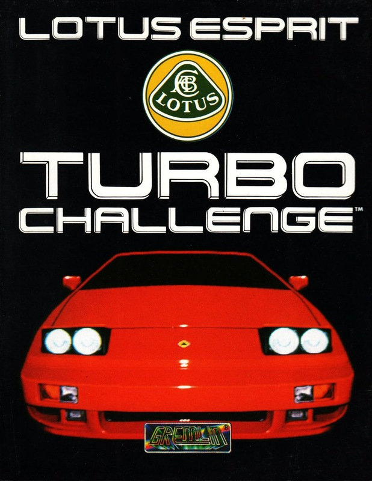
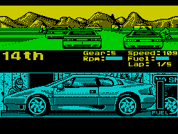

Lotus Esprit Turbo Challenge


{kind=link}

| Publisher: | Gremlin |
| Price: | £10.99, £14.99 |
| Year: | 1990 |
| Source: | CRASH, Issue 84 |

Jump into the drivers seat of a Lotus Turbo Esprit, buckle up and stick your foot on the accelerator! That’s the invitation from Gremlin and you’d be mad if you said no. This is one hot simulation, so hot you have to grab a hand of ice cubes everytime you play it!
The ultimate aim of the game is to survive the stomach-churning tracks and quality for the Lotus Licence. This is easier said than done because there are 32 tracks and they can throw up some mean situations! Some have roadworks and rocks, not to mention the other sixteen cars all racing for the same goal!

Completing a track involves a lot of skill and some planning ahead as the fuel your car can carry is not always enough. Pit stops appear after the start/finish line and stopping in one will bring up the refuelling screen. To complete a track you need to finish in the top eight: in a two-player game if one player manages it both automatically sent to the next track. Your starting position on a track depends on where you finished in the last. If you finished first you go to the back, second you go to fifteenth, etc.
The split-screen two-player option is great fun if you have a friend to play against. The trouble is you can forget which car you’re controlling, resulting in some spectacular crashes. All the graphics on the cars, track, introduction screens and background are simply excellent, and the track scrolls by very smoothly. Going over a hill is a little tricky, though, as it’s impossible to see what’s coming up on the other side. For sound lovers there are three tunes to choose from, although they don’t play during the game so there’s not much point!
Gremlin have given all players a real incentive to get on in the game by offering a real Lotus Licence to whoever completes it. At the end you’ll be given some code numbers. Writing these down on the form included in the pack and sending them off will soon reward you with your well deserved prize. Lotus Esprit Turbo Challenge is one of the best two-player car simulations around. Speed fans get out there and buy it now!
NICK — 89%
A chap from Gremlin popped down to the office the other day and took everyone for a spin in his Lotus. That was the day I was away. Hurumph! However, the game Lotus Esprit Turbo Challenge more than makes up for my disappointment! All credit goes to the programmers for producing such a good looking and very playable racing game. The intro sequence is a masterpiece, whilst the game itself is so playable — especially against a friend. Sometimes it’s difficult to distinguish between the track and the grass, and so it’s all too easy to spin off the track. But despite that, Lotus is a birrova mega-game and racing Smash if ever there was one!
MARK — 91%
RATING
A highly playable racing extravaganza, especially with two players
| Presentation: | 88% |
| Graphics: | 88% |
| Sound: | 85% |
| Playability: | 90% |
| Addictivity: | 88% |
| Overall: | 90% |